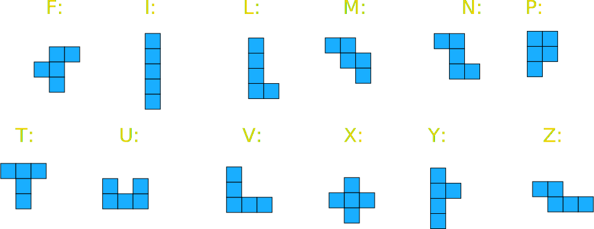

Pentomino Challenge
These are pentominoes, with their letter codes:

This challenge is more difficult than it looks.
Create four yes/no questions which uniquely classify each pentomino.
Examples of such questions are:
- Does it have rotational symmetry?
- Does it have reflection symmetry?
- Is it the net of an open box?
- Does it have point symmetry?
The idea is to create a set of questions where no pentomino has the same answers as another.
Example
| Rotational Symmetry |
Reflection Symmetry |
Open Box | Point Symmetry |
|
| F | no | no | yes | no |
| I | yes | yes | no | yes |
| L | no | no | no | no |
| M | no | yes | yes | no |
| N | yes | no | yes | yes |
| P | no | no | no | no |
| T | no | yes | yes | no |
| U | ||||
| V | ||||
| X | ||||
| Y | ||||
| Z |
... so these four questions do not work ... the answers for T are the same as for M ... !
Can YOU think of four questions which will work?
(You can discuss this at the forum.)
This is based upon an investigation by L Mottershead. Sources of Mathematical Discovery